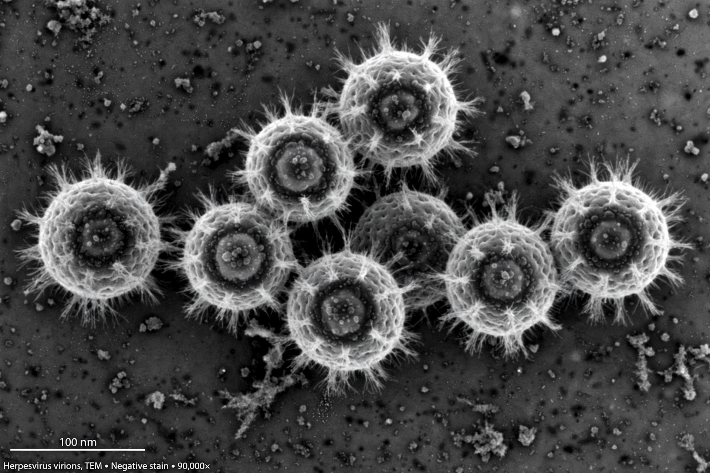

| Common name | EBV |
|---|---|
| Family | Herpesviridae |
| Subfamily | Gammaherpesvirinae |
| Genome | Double-stranded DNA |
The Epstein–Barr virus (EBV), formally Human gammaherpesvirus 4, is one of the most common human viruses. It is a double-stranded DNA herpesvirus of the gammaherpesvirus subfamily and was the first virus discovered to cause cancer in humans. Roughly 90–95% of adults worldwide have been infected at some point.
EBV was identified in 1964 by pathologist Anthony Epstein and virologist Yvonne Barr (with electron microscopist Bert Achong) in cultured cells from Burkitt lymphoma samples provided by surgeon Denis Burkitt, who had described the jaw tumour of African children. The discovery established the link between viruses and human cancer.
Primary infection usually occurs in childhood and is often asymptomatic or mild; in adolescents and young adults it can cause infectious mononucleosis ("glandular fever" or "kissing disease") — fever, sore throat, swollen lymph nodes and fatigue that can linger for weeks. After infection, EBV establishes lifelong latent infection in B lymphocytes, kept in check by T-cell immunity. It is causally associated with Burkitt lymphoma, Hodgkin lymphoma, nasopharyngeal carcinoma, certain gastric cancers and post-transplant lymphoproliferative disorders. A large 2022 study of US military personnel provided strong evidence that EBV infection is the leading cause of multiple sclerosis, greatly intensifying interest in an EBV vaccine. There is no specific antiviral treatment; management is supportive.